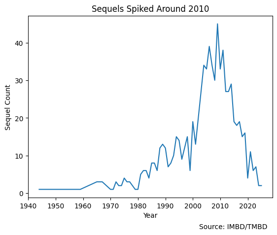
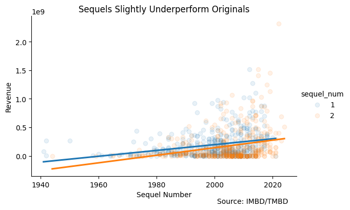
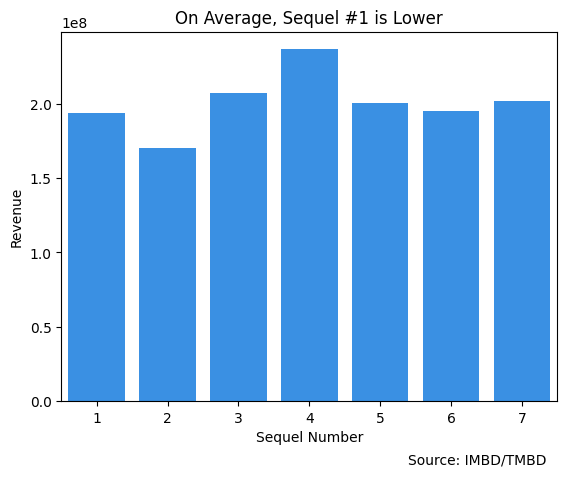
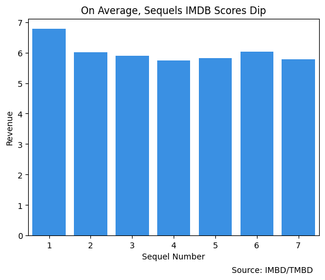
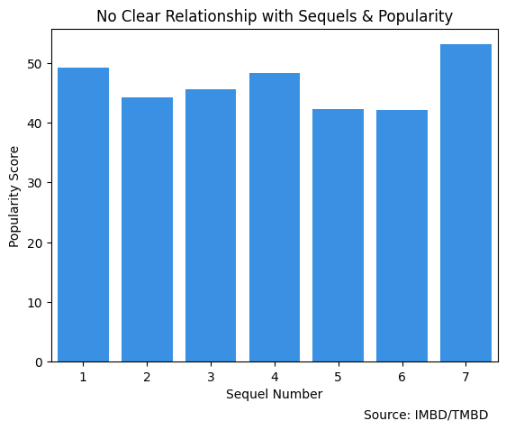
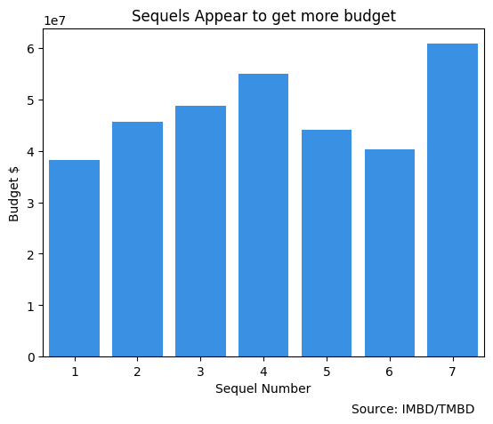

import pandas as pd
import numpy as np
import seaborn as sns
import matplotlib.pyplot as pltMovie Sequel Analysis
Alex Bass
I want to approach this by copying down questions then answering them 1 by 1.
- Are there more sequels over time?
- On average, do sequels make more than the original?
- On average, are sequels more quality than the original?
- On average, are sequels more popular than the original?
- Do sequels get less budget?
- Does budget affect the success of sequels?
- Are sequels that keep the same director more or less successful?
- Perhaps look into popular production companies. Are movies different for certain production companies?
- How does time between a film affect its success(popularity and revenue)?
viz ideas: - maybe create a dashboard showing the success over time of all the groups and have a option to select popularity or box office revenue.
todo: - Maybe go through and add zeros to budget numbers and revenue numbers? - Maybe run a regression for these three DVs: Revenue, Popularity, IMBD Score
data = pd.read_excel("./edited.xlsx")
data.head()| Description | URL | Title Type | IMDb Rating | Runtime (mins) | Genres | Num Votes | Release Date | Directors | production_company | popularity | production_country | language | revenue | sequel_group | budget | Year | Title | sequel_num | delete | |
|---|---|---|---|---|---|---|---|---|---|---|---|---|---|---|---|---|---|---|---|---|
| 0 | NaN | https://www.imdb.com/title/tt0145487/ | Movie | 7.4 | 121.0 | Action, Adventure, Sci-Fi | 874405 | 5/3/02 | Sam Raimi | Marvel Enterprises, Laura Ziskin Productions, ... | 113.559 | United States of America | en | 821708551 | 1 | 139000000 | 2002 | Spider-Man | 1 | NaN |
| 1 | NaN | https://www.imdb.com/title/tt0316654/ | Movie | 7.5 | 127.0 | Action, Adventure, Sci-Fi | 704005 | 6/30/04 | Sam Raimi | Marvel Enterprises, Laura Ziskin Productions, ... | 39.440 | United States of America | en | 788976453 | 1 | 200000000 | 2004 | Spider-Man 2 | 2 | NaN |
| 2 | NaN | https://www.imdb.com/title/tt0413300/ | Movie | 6.3 | 139.0 | Action, Adventure, Sci-Fi | 633858 | 5/4/07 | Sam Raimi | Laura Ziskin Productions, Marvel Studios, Colu... | 85.522 | United States of America | en | 894983373 | 1 | 258000000 | 2007 | Spider-Man 3 | 3 | NaN |
| 3 | NaN | https://www.imdb.com/title/tt0133093/ | Movie | 8.7 | 136.0 | Action, Sci-Fi | 2040270 | 3/31/1999 | Lana Wachowski, Lilly Wachowski | Village Roadshow Pictures, Groucho II Film Par... | 106.254 | United States of America | en | 463517383 | 2 | 63000000 | 1999 | The Matrix | 1 | NaN |
| 4 | NaN | https://www.imdb.com/title/tt0234215/ | Movie | 7.2 | 138.0 | Action, Sci-Fi | 627738 | 5/15/03 | Lana Wachowski, Lilly Wachowski | Village Roadshow Pictures, Silver Pictures, NP... | 70.440 | United States of America | en | 738599701 | 2 | 150000000 | 2003 | The Matrix Reloaded | 2 | NaN |
Need to do a few more cleaning steps: 1. Delete movies that do not have sequels marked in delete column 2. Search for movies that do not have sequels programatically, then delete 3. I edited sequel_num, but did not edit sequel_group
data = data.query("delete != 1").reset_index(drop = True).drop(columns = ['delete'])
data.head()| Description | URL | Title Type | IMDb Rating | Runtime (mins) | Genres | Num Votes | Release Date | Directors | production_company | popularity | production_country | language | revenue | sequel_group | budget | Year | Title | sequel_num | |
|---|---|---|---|---|---|---|---|---|---|---|---|---|---|---|---|---|---|---|---|
| 0 | NaN | https://www.imdb.com/title/tt0145487/ | Movie | 7.4 | 121.0 | Action, Adventure, Sci-Fi | 874405 | 5/3/02 | Sam Raimi | Marvel Enterprises, Laura Ziskin Productions, ... | 113.559 | United States of America | en | 821708551 | 1 | 139000000 | 2002 | Spider-Man | 1 |
| 1 | NaN | https://www.imdb.com/title/tt0316654/ | Movie | 7.5 | 127.0 | Action, Adventure, Sci-Fi | 704005 | 6/30/04 | Sam Raimi | Marvel Enterprises, Laura Ziskin Productions, ... | 39.440 | United States of America | en | 788976453 | 1 | 200000000 | 2004 | Spider-Man 2 | 2 |
| 2 | NaN | https://www.imdb.com/title/tt0413300/ | Movie | 6.3 | 139.0 | Action, Adventure, Sci-Fi | 633858 | 5/4/07 | Sam Raimi | Laura Ziskin Productions, Marvel Studios, Colu... | 85.522 | United States of America | en | 894983373 | 1 | 258000000 | 2007 | Spider-Man 3 | 3 |
| 3 | NaN | https://www.imdb.com/title/tt0133093/ | Movie | 8.7 | 136.0 | Action, Sci-Fi | 2040270 | 3/31/1999 | Lana Wachowski, Lilly Wachowski | Village Roadshow Pictures, Groucho II Film Par... | 106.254 | United States of America | en | 463517383 | 2 | 63000000 | 1999 | The Matrix | 1 |
| 4 | NaN | https://www.imdb.com/title/tt0234215/ | Movie | 7.2 | 138.0 | Action, Sci-Fi | 627738 | 5/15/03 | Lana Wachowski, Lilly Wachowski | Village Roadshow Pictures, Silver Pictures, NP... | 70.440 | United States of America | en | 738599701 | 2 | 150000000 | 2003 | The Matrix Reloaded | 2 |
#This group I need to create multiple ones
fltr = data.groupby("sequel_group").apply(lambda x : sum(x.sequel_num == 1)>1)
fltr = fltr.index[fltr].to_list()#takes my list of doubled sequel groups and separates them
for grp_num in fltr:
tmp = data.query("sequel_group == @grp_num")
counter = 0
rows_to_rename = []
for row, data_row in tmp.iterrows():
if data_row['sequel_num'] == 1:
counter += 1
if counter ==2:
rows_to_rename.append(row)
new_group = data.sequel_group.max()+1
data.loc[rows_to_rename, "sequel_group"] = new_group
fltr = data.groupby("sequel_group").apply(lambda x : sum(x.sequel_num == 1)>1)
fltr.index[fltr].to_list()[]# for this group I need to set the previous sequel group
fltr = data.groupby("sequel_group").apply(lambda x : sum(x.sequel_num == 1)==0)
fltr = fltr.index[fltr].to_list()#take groups that need to be added to the previous group and add them to it.
for grp_num in fltr:
tmp = data.query("sequel_group == @grp_num")
idx_to_check = tmp.index[0] - 1
new_group = data.loc[idx_to_check, "sequel_group"]
ids_to_change = tmp.index.to_list()
data.loc[ids_to_change, "sequel_group"] = new_groupfltr = data.groupby("sequel_group").apply(lambda x : sum(x.sequel_num == 1)==0)
fltr.index[fltr].to_list()[]Here are a few links were I left off: 1. https://developer.themoviedb.org/docs/finding-data 2. https://www.themoviedb.org/bible/movie/59f3b16d9251414f20000001#59f73b759251416e71000007
data.to_csv("cleaned_data.csv", index=False)Are There More Movie Sequels Over Time?
# filter to sequels only
sequels = data.query("sequel_num >= 2")
# Scatter plot X: Time, Y: Count
y = sequels.groupby("Year").agg('count')['Title'].to_list()
x = sequels.groupby("Year").agg('count')['Title'].index.to_list()
sns.lineplot(x=x, y=y)
plt.title("Sequels Spiked Around 2010")
plt.xlabel("Year")
plt.ylabel("Sequel Count")
plt.annotate(
"Source: IMBD/TMBD",
xy=(0.7, -0.17),
xycoords="axes fraction",
)Text(0.7, -0.17, 'Source: IMBD/TMBD')
We see very few movie sequels in the mid 1900s, but sequels steadily increase spiking around 2010. There seems to be evidence of movie sequels decreasing again.
Note: The important information we don’t see here is total movies made over time. It would be better if these numbers were a proportion.
On Average, Do Sequels Make More Than The Original?
sequels12 = data.query("sequel_num in [1,2]")
#sns.scatterplot(x="Year",y="revenue",data=sequels12,hue="sequel_num")
sns.lmplot(x="Year",y="revenue",data=sequels12,hue="sequel_num",
height=4, aspect=1.5, ci=None,
scatter_kws={"alpha":0.1}
)
plt.title("Sequels Slightly Underperform Originals")
plt.ylabel("Revenue")
plt.xlabel("Sequel Number")
plt.annotate(
"Source: IMBD/TMBD",
xy=(0.7, -0.17),
xycoords="axes fraction",
)Text(0.7, -0.17, 'Source: IMBD/TMBD')
sequels12 = data.query("sequel_num in [1,2,3,4,5,6,7]")
x = sequels12.groupby('sequel_num')['revenue'].agg("mean").index.to_list()
y = sequels12.groupby('sequel_num')['revenue'].agg("mean").to_list()
sns.barplot(x=x,y=y, color="dodgerblue")
plt.title("On Average, Sequel #1 is Lower")
plt.ylabel("Revenue")
plt.xlabel("Sequel Number")
plt.annotate(
"Source: IMBD/TMBD",
xy=(0.7, -0.17),
xycoords="axes fraction",
)Text(0.7, -0.17, 'Source: IMBD/TMBD')
Are Sequels More Quality?
sequels12 = data.query("sequel_num in [1,2,3,4,5,6,7]")
x = sequels12.groupby('sequel_num')['IMDb Rating'].agg("mean").index.to_list()
y = sequels12.groupby('sequel_num')['IMDb Rating'].agg("mean").to_list()
sns.barplot(x=x,y=y, color="dodgerblue")
plt.title("On Average, Sequels IMDB Scores Dip")
plt.ylabel("Revenue")
plt.xlabel("Sequel Number")
plt.annotate(
"Source: IMBD/TMBD",
xy=(0.7, -0.17),
xycoords="axes fraction",
)Text(0.7, -0.17, 'Source: IMBD/TMBD')
Are Sequels More Popular?
sequels12 = data.query("sequel_num in [1,2,3,4,5,6,7]")
x = sequels12.groupby('sequel_num')['popularity'].agg("mean").index.to_list()
y = sequels12.groupby('sequel_num')['popularity'].agg("mean").to_list()
sns.barplot(x=x,y=y, color="dodgerblue")
plt.title("No Clear Relationship with Sequels & Popularity")
plt.ylabel("Popularity Score")
plt.xlabel("Sequel Number")
plt.annotate(
"Source: IMBD/TMBD",
xy=(0.7, -0.17),
xycoords="axes fraction",
)Text(0.7, -0.17, 'Source: IMBD/TMBD')
Do Sequels Get Less Budget?
sequels12 = data.query("sequel_num in [1,2,3,4,5,6,7]")
x = sequels12.groupby('sequel_num')['budget'].agg("mean").index.to_list()
y = sequels12.groupby('sequel_num')['budget'].agg("mean").to_list()
sns.barplot(x=x,y=y, color="dodgerblue")
plt.title("Sequels Appear to get more budget")
plt.ylabel("Budget $")
plt.xlabel("Sequel Number")
plt.annotate(
"Source: IMBD/TMBD",
xy=(0.7, -0.17),
xycoords="axes fraction",
)Text(0.7, -0.17, 'Source: IMBD/TMBD')